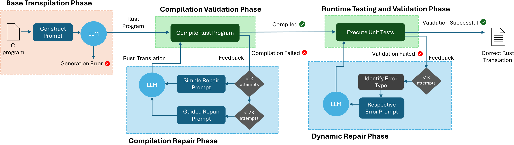

LLM-assisted Transpilation from C to Rust — a framework for automating C-to-Rust translation with iterative guided repair and security analysis.
1 Stony Brook University · 2 Amazon Web Services · 3 UC Davis
Rust is a strong contender for a memory-safe alternative to C as a "systems" language, but porting the vast amount of existing C code to Rust remains daunting. In this paper, we evaluate the potential of large language models (LLMs) to automate the transpilation of C code to idiomatic Rust. We present SafeTrans, a generic framework that leverages LLMs to (i) transpile C code into Rust, and (ii) iteratively repair compilation and runtime errors. A key novelty of our approach is a few-shot guided repair technique for translation errors, which provides contextual information and example code snippets for specific error types, guiding the LLM toward the correct solution. Another novel aspect of our work is the evaluation of the security implications of the transpilation process, showing how some vulnerability classes in C persist in the translated Rust code. SafeTrans was evaluated with six leading LLMs on 2,653 C programs and two real-world C projects. Our results show that iterative repair improves the rate of successful translations from 54% to 80% for the best-performing LLM (gpt-4o).
Numbers
Framework
SafeTrans orchestrates a four-phase automated pipeline to translate C programs into idiomatic, safe Rust.

unsafe blocks.
rustc. Successful
binaries advance to validation; failures trigger the repair phase.Evaluation
Compilation repair rate and final translation success rate across six LLMs after the complete SafeTrans pipeline.
| LLM | Base CA | Final CA | Improvement | Repair Rate | Success Rate |
|---|---|---|---|---|---|
| GPT-4o Best | 54% | 80% | +26% | 93.5% | |
| DeepSeek-V3 | 49% | 79% | +30% | 89.8% | |
| Codestral | ~44% | ~66% | +22% | 85.8% | |
| DeepSeek-Coder | ~15% | ~34% | +19% | 55.6% | |
| Qwen2.5-Coder | ~17% | ~34% | +17% | 62.5% | |
| Llama3 (70B) | ~9% | ~21% | +12% | 58.1% |
Combining basic and guided repair achieves up to 25% improvement in computational accuracy for top LLMs. Even smaller models nearly double their success rate, demonstrating broad applicability of the approach.
SafeTrans was evaluated on two real-world libraries (url_parser and
avl_tree). Unlike competing tools, SafeTrans successfully compiles
both while producing fully safe Rust without unsafe blocks.
Security Analysis
SafeTrans uniquely evaluates the security implications of C-to-Rust transpilation, examining how memory vulnerabilities in C programs behave in translated Rust code.
Citation
If you use SafeTrans in your research, please cite our paper.
@inproceedings{farrukh2026safetrans, author = {Farrukh, Muhammad and Coskun, Baris and Palit, Tapti and Polychronakis, Michalis}, title = {SafeTrans: LLM-assisted Transpilation from C to Rust}, booktitle = {Proceedings of the 1st Workshop on Code Translation, Transformation, and Modernization (ReCode '26)}, year = {2026}, doi = {10.1145/3786180.3788317}, publisher = {ACM}, address = {Rio de Janeiro, Brazil} }